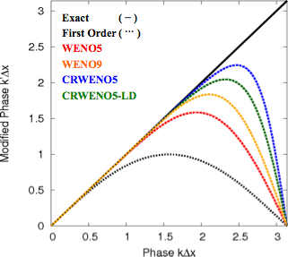

Numerical Scheme
Contact: ghosh (at) mcs (dot) anl (dot) gov

Compact Interpolation
A compact interpolation couples the interpolation of the variable at one cell interface with other interfaces, thus resulting in a linear system that needs to be solved. The numerical advantages of the compact are better spectral resolution, narrower stencil width and lower Taylor series error for the same order of convergence.
Weighted Essentially Non-Oscillatory (WENO) Schemes
The WENO schemes use an adaptive stenciling procedure for a high order accurate non-oscillatory interpolation. Low order accurate candidate stencils are identified at each interface which can be combined with optimal coefficients to yield a high order accurate interpolation. The optimal coefficients are scaled by the smoothness of the candidate stencils to yield the WENO weights. The weights for stencils containing discontinuities approach zero while they approach their optimal value for smooth stencils. Thus, the resulting interpolation is high order accurate in smooth regions of the solution while yielding non-oscillatory results at or near discontinuities.
Compact-Reconstruction Weighted Essentially Non-Oscillatory (CRWENO) Schemes:
The CRWENO schemes are derived by applying the WENO algorithm to compact candidate interpolation stencils. At each interface, lower order accurate compact stencils are identified, along with their optimal coefficients which would result in a higher order accurate compact stencil. The optimal coefficients are scaled by the smoothness of the respective stencils to obtain the WENO weights. The resulting scheme is high order accurate in smooth regions of the flow and non-oscillatory across discontinuities.
Example of a 5th order CRWENO scheme (CRWENO5) - Three 3rd order compact interpolations are identified at the interface (j+1/2). When combined using the optimal coefficients (c1,c2,c3), they result in a 5th order compact interpolation. The optimal coefficients are replaced with the WENO coefficients for the three 3rd order candidate stencils. The resulting interpolation scheme is 5th order accurate for smooth solutions and non-oscillatory for discontinuities.


Boundary Treatment
Numerical Properties - Spectral Analysis
Compact schemes have a much higher spectral resolution for the same order of convergence. The linear schemes underlying the CRWENO5 and CRWENO5-LD (low dissipation variant) have higher spectral resolution than the 5th (WENO5) and 9th (WENO9) order non-compact schemes. The compact schemes have a lower dissipation for the wave-numbers that are well-resolved.


Background